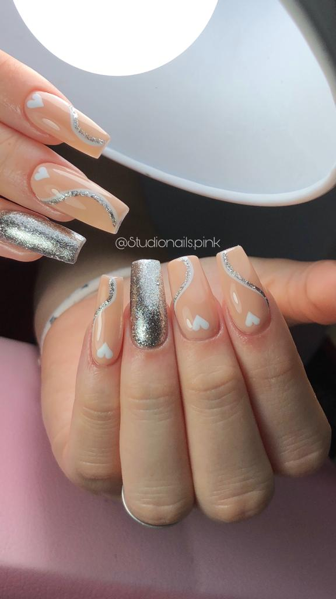

Esculpidas

¿Que son las esculpidas?
Las uñas esculpidas consisten en aplicar o esculpir un material artificial sobre la uña natural. Esto permite moldear la forma y reconstruir uñas mordidas o simplemente lucir uñas más largas. Este tipo de manicura se realiza desde cero, través de moldes y productos específicos que modelan la uña, dándole el formato y el largo adecuado. Ambos métodos duran entre 15 y 30 días aproximadamente, dependiendo del crecimiento natural de la uña de cada persona.